Market Lab guide · Updated October 5, 2026
How to use the Market Lab
A step-by-step tour of Luban's trading simulator for people who have never bought a stock. Each step shows a screenshot of the Market Lab. The red circles mark the buttons we're talking about, and their numbers match the list under each picture. Every trade uses simulated money, so nothing you do here can cost you real money.
Words you'll see
You don't need to know anything about investing to start. These are the words the Market Lab uses most.
- Stock (or share)
- A small piece of a company. When the company does well and more people want to own it, the price of its shares usually goes up. When it does badly, the price usually goes down.
- ETF
- Short for exchange-traded fund. One ETF holds many stocks at once, so buying a single ETF share spreads your money across lots of companies. You buy and sell it just like a stock.
- Crypto
- Digital currencies such as Bitcoin. Crypto trades every hour of every day. In the Market Lab you buy it in lots, a fixed small amount of the coin, instead of whole coins.
- Symbol
- The short code for something you can buy. SHOP.TO is Shopify on the Toronto Stock Exchange (the .TO means Toronto). AAPL is Apple in the US. BTC-CAD is Bitcoin priced in Canadian dollars.
- Portfolio
- Everything your team owns: your cash plus everything you've bought. Its total value decides your place on the leaderboard.
- Market value
- What something you own is worth right now: the number of shares times today's price.
- Gain, loss, and return
- How much an investment has gone up (a gain) or down (a loss) compared to what you paid. A return is the same thing as a percentage: +5% means it's worth 5% more than you paid.
- Previous close
- The price when the market last closed. Today's change is measured from it.
- Volume
- How many shares changed hands. High volume means lots of people were buying and selling.
- Order
- An instruction to buy or sell. Steps 9 and 11 explain the different kinds.
Step 1
Find your way around
Sign in at sim.lubancanada.com with the account you registered. The Market Lab opens on one screen split into three areas.

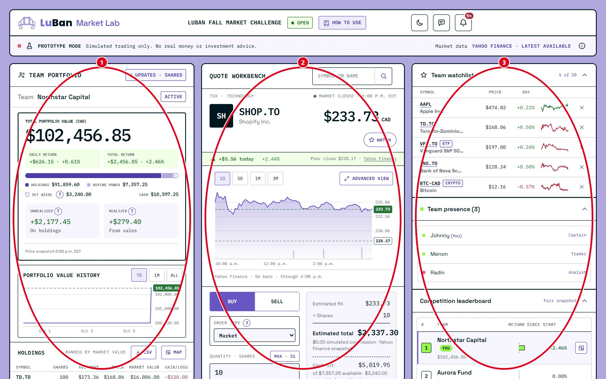
- Team portfolio. Your team's money and everything it owns.
- Quote workbench. Where you look up prices, read charts and place orders.
- Team room. Who on your team is online and the competition leaderboard.
Tip: your whole team shares one portfolio. When a teammate buys something, you'll see it in your holdings too.
Step 2
The top bar

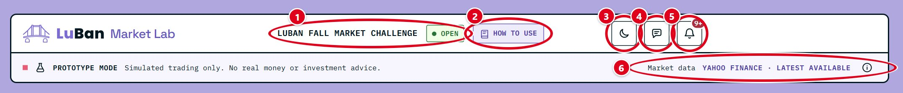
- Competition name and status. Open means you can trade. If it says paused or ended, orders are turned off.
- How to use. Opens this guide in a new tab, so you can follow along while you trade.
- Activity bell. Your team's activity feed (step 15). A red bubble with a number means there are new entries you haven't seen.
- Market data. Shows where prices come from and whether they've loaded. Latest available means you're seeing current prices. If it says Connecting, give it a few seconds.
Your name, an Account link and Sign out sit at the top right, next to the bell.
Step 3
Your portfolio at a glance

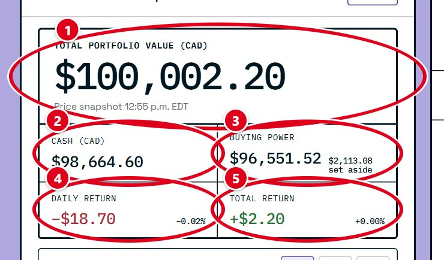
- Total portfolio value. Your cash plus the current value of everything you own. This is the number that ranks your team.
- Cash. Money you haven't invested.
- Buying power. The cash you can spend right now. It can be lower than your cash, because money is set aside for buy orders that are still waiting (step 11).
- Daily return. How much your portfolio has gained or lost since the previous day.
- Total return. How much it has gained or lost since the competition started.
Step 4
Your portfolio over time

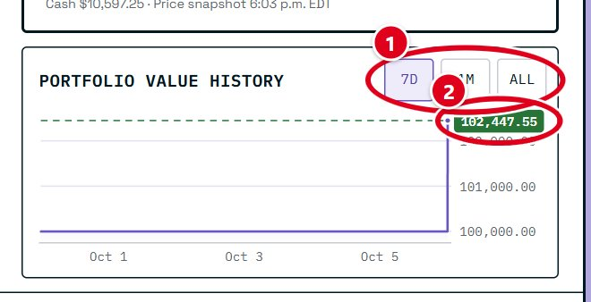
- 7D, 1M and ALL. Show the last seven days, the last month, or everything since you started.
- Latest value. Your portfolio's value right now. The line shows how you got there.
Step 5
Look up a stock

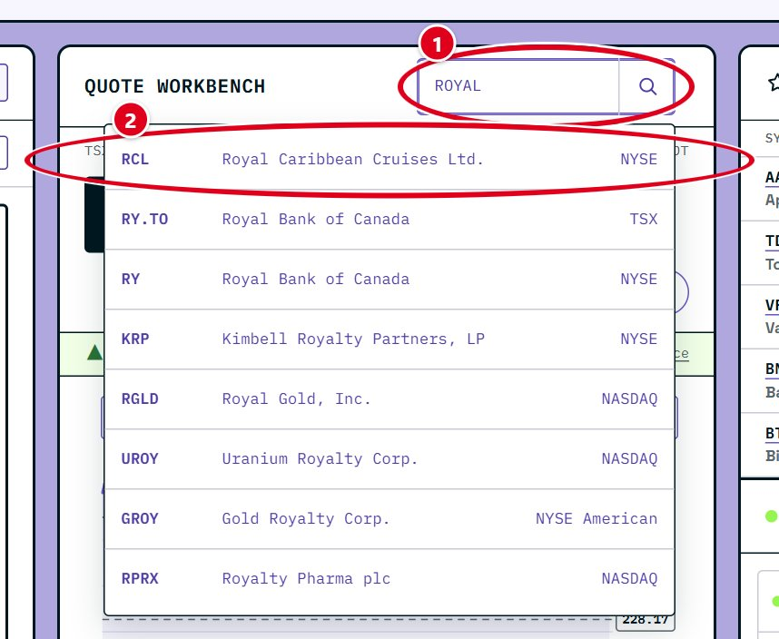
- Search box. Type a company name (like Royal Bank) or a symbol (like RY.TO). You can also click the empty box to see popular picks.
- Suggestions. Click one to load it into the workbench. Its price, chart and order ticket all switch to it.
Tip: Canadian companies on the Toronto Stock Exchange end in .TO. US companies have no ending. Crypto looks like BTC-CAD.
Step 6
Read the quote

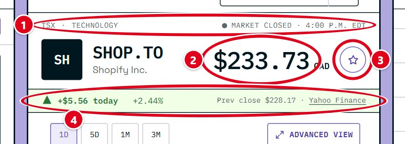
- Price and change. The latest price, and how much it has moved since the previous close. Green means up, red means down.
- Facts. The previous close, today's change in dollars, the exchange it trades on, its sector (the kind of business), and when the price was last updated.
Prices come from Yahoo Finance's free feed and can be a few minutes behind the real market.
Step 7
Read the price chart

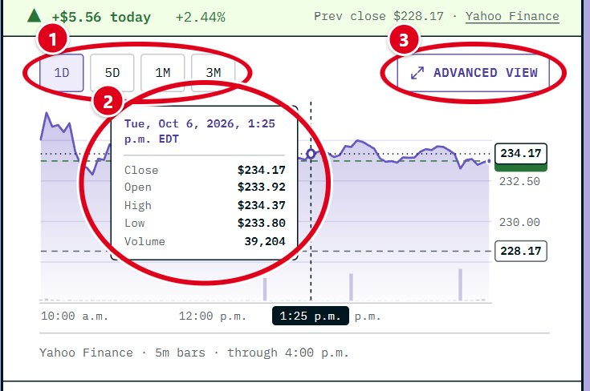
- 1D, 5D, 1M, 3M. Show one day, five days, one month, or three months of prices.
- Hover box. Move your mouse over the chart (or tap it on a phone) to see the price at that moment: where it opened, its high and low, where it closed, and the volume.
- Advanced view. Opens a bigger chart with more tools (step 8).
The dashed line with a coloured label on the right is today's price. On the 1D chart, a grey dashed line marks the previous close, so you can see at a glance whether the price is above or below it. The bars along the bottom are volume.
Step 8
The Advanced view

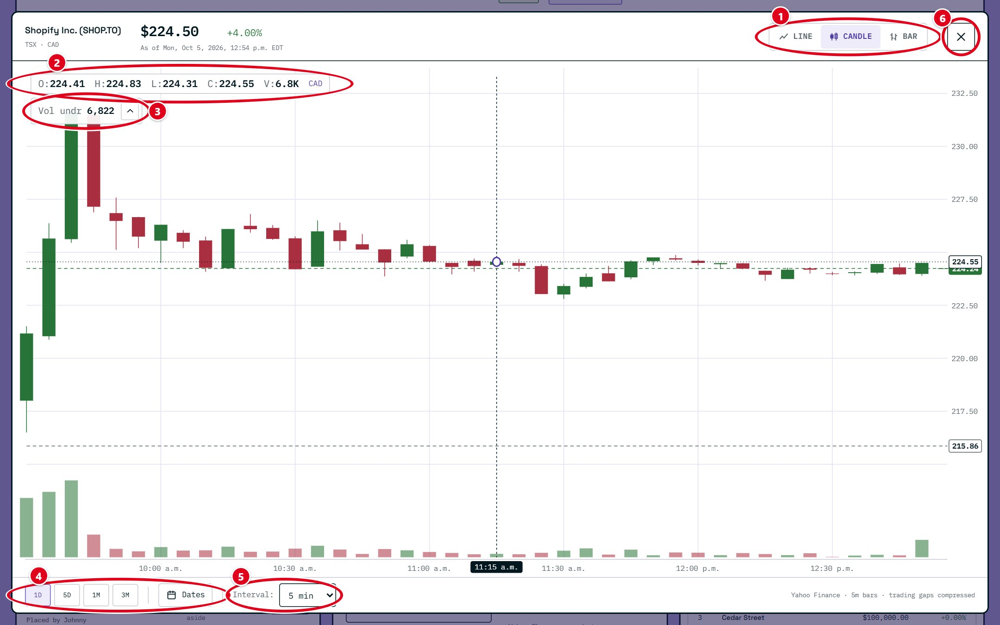
- Line, Candle, Bar. Three ways to draw the same prices. Line is the simplest. Candle and Bar show more detail for each time period (see below).
- Price readout. O, H, L, C and V stand for open, high, low, close and volume for the bar under your mouse.
- Volume. Shows the volume for that bar. The arrow hides or shows the volume bars at the bottom.
- Range and Dates. Pick a preset range, or click Dates to choose your own start and end date, then Apply.
- Interval. How much time each bar covers, from 1 minute to 1 week. Greyed-out choices aren't available for the dates you picked.
- Close. Returns to the main screen. The Esc key works too.
How to read a candle
Each candle is one time period, like five minutes or one day. A green candle closed higher than it opened. A red candle closed lower. The thick body runs from the opening price to the closing price, and the thin line through it reaches the highest and lowest prices in that period.
Step 9
Buy or sell
The order ticket sits under the chart and always trades whatever is loaded in the workbench.

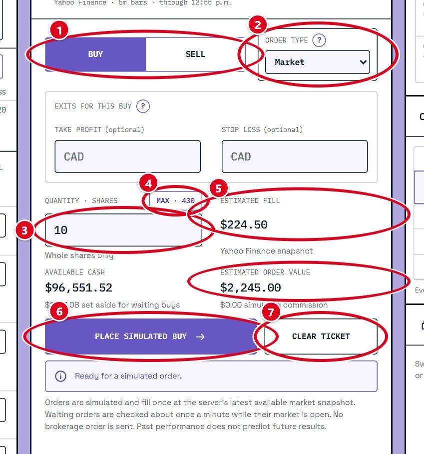
- Buy or Sell. Choose whether you're buying more or selling something you own.
- Order type. Market trades right away at the current price. The other types wait for a price you choose (step 11).
- Quantity. How many shares to buy or sell. Stocks and ETFs trade in whole shares, and crypto trades in whole lots.
- Max (or All when selling). Fills in the most you can buy with your buying power, or everything you can sell. It asks you to confirm first (step 10).
- Estimates. The price you'll probably get and the total cost of the order, before you commit.
- Place simulated buy (or sell). Sends the order. A market order fills straight away, and the result shows below the ticket.
- Clear ticket. Resets everything you typed.
Stocks and ETFs can only be traded while their exchange is open, which is 9:30 a.m. to 4:00 p.m. Eastern time on weekdays for both Toronto and the US. Crypto trades any time. When a market is closed, the ticket tells you why and the button stays off.
Tip: start with a small order to see how it works. You can always buy more.
Step 10
The Max and All buttons

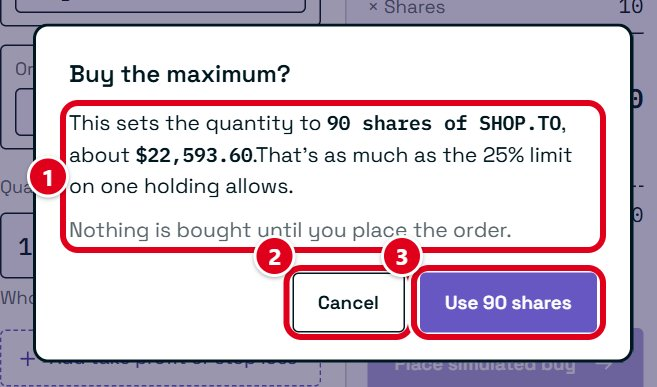
- What it will do. How many shares it would fill in, what they'd cost, and how much of your buying power that uses.
- Cancel. Leaves the quantity as it was.
- Use. Fills in that quantity. Nothing is bought or sold until you press the place button on the ticket.
Tip: putting all your money into one company is risky. If that one company has a bad day, your whole portfolio does too.
Step 11
Orders that wait for a price
Instead of trading right now, you can tell the Market Lab to trade later, once the price reaches a number you pick. These are the order types:
- Market
- Buys or sells right away at the current price.
- Limit
- Waits for your price or better. A limit buy at $50 only buys if the price drops to $50 or lower. A limit sell at $60 only sells at $60 or higher.
- Stop loss
- Sells if the price falls to the number you set, so a loss can't grow past it. It sells at the next available price, which can be a little lower if the price is dropping fast.
- Take profit
- Sells once the price rises to your target, locking in the gain.

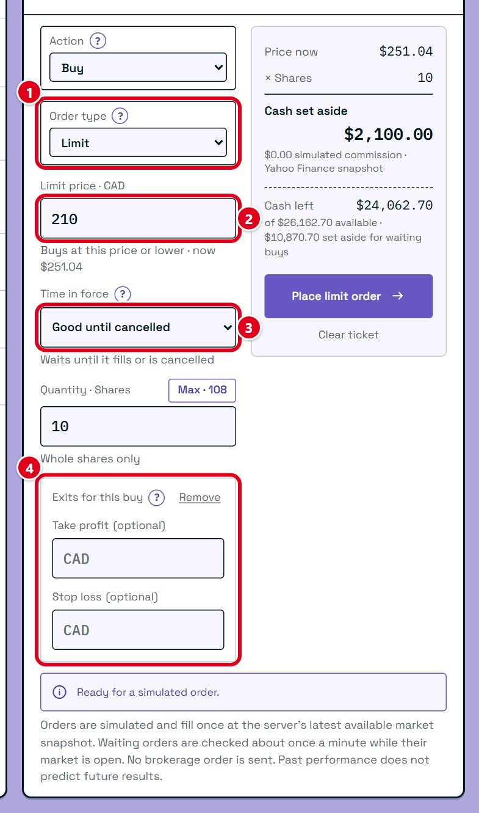
- Order type. Pick Limit, Stop loss or Take profit.
- Price. The price the order waits for. The current price is shown underneath to help you choose.
- Time in force. How long the order waits. Day cancels the order when the trading day ends. Good until cancelled keeps it waiting until it fills, someone cancels it, or the competition ends.
- Exits for this buy. Optional. Add a take profit price, a stop loss price, or both. They start waiting as soon as your buy fills, and when one of them sells, the other is cancelled.
The Market Lab checks waiting orders about once a minute while their market is open. Money for a waiting buy is set aside, so your buying power drops until it fills or is cancelled. A team can have up to 20 waiting orders at once. The buttons next to each field explain them in the Market Lab too.
Step 12
Your holdings

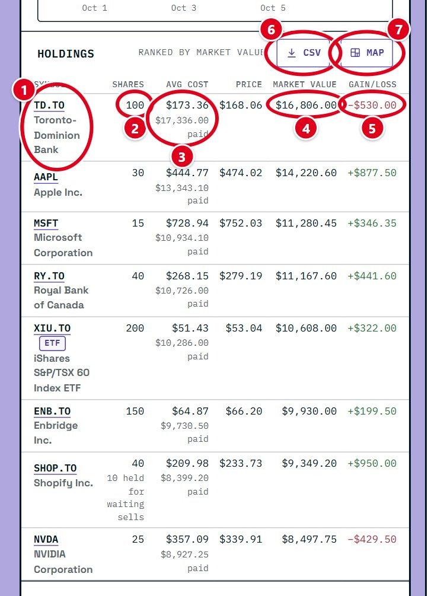
- Symbol. Click it to load that holding into the workbench, ready to look at or sell.
- Quantity. How many shares (or lots) your team owns. If some are held back for a waiting sell, it says so.
- Market value. What they're worth at today's price.
- Gain/loss. How much they've made or lost compared to what you paid.
- Map. Opens the portfolio map (step 13).
Holdings are listed from the biggest to the smallest by market value.
Step 13
The portfolio map
The map shows your whole portfolio as a picture. Each tile is one holding, grouped by sector and industry. The bigger the tile, the more of your money is in it. Green tiles are up, red tiles are down, and grey is about even.

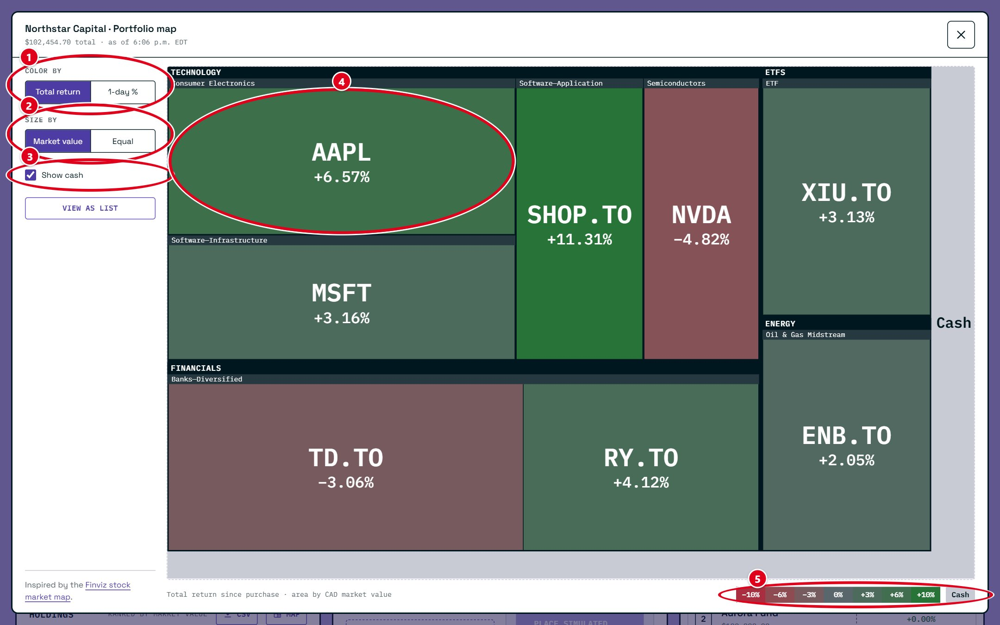
- Color by. Total return colours each tile by how it's done since you bought it. 1-day % colours it by today's move.
- Size by. Market value makes bigger holdings bigger tiles. Equal makes every tile the same size.
- Show cash. Shows your uninvested cash as the grey area around your holdings.
- A holding. Hover for details, or click it to open that holding in the workbench.
- Legend. What each colour means.
If the map is hard to read, View as list shows the same information as a table.
Step 14
Your waiting orders

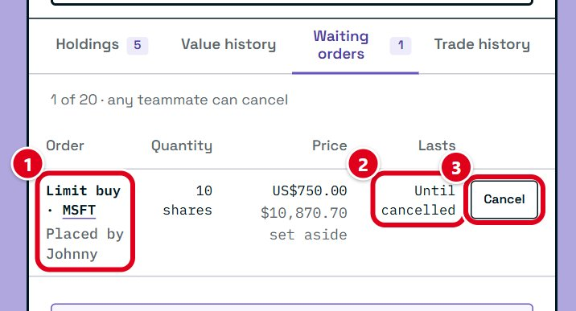
- The order. What it will do and who placed it.
- Lasts. Whether it ends today or waits until it's cancelled.
- Cancel. Removes the order and frees up any money set aside for it. Anyone on your team can cancel any of the team's orders.
Step 15
Your team's activity
Every order anyone on your team places shows up in one feed, behind the bell at the top right.

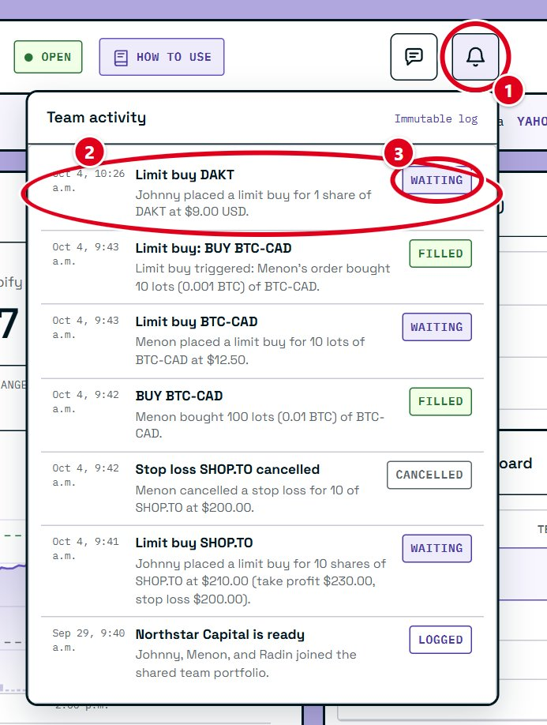
- The bell. Click it to open or close the feed. When there's something new, a red bubble on its top right shows how many entries you haven't seen. Opening the feed clears it.
- An entry. What happened, who did it, and when. New entries have a purple mark on their left edge. Entries can't be edited or deleted.
- Status. Filled means the trade went through. Waiting means it's waiting for its price. Cancelled and Expired mean it ended without trading.
Tip: talk to your team before big trades. You all share the same money.
Step 16
Your team and the leaderboard

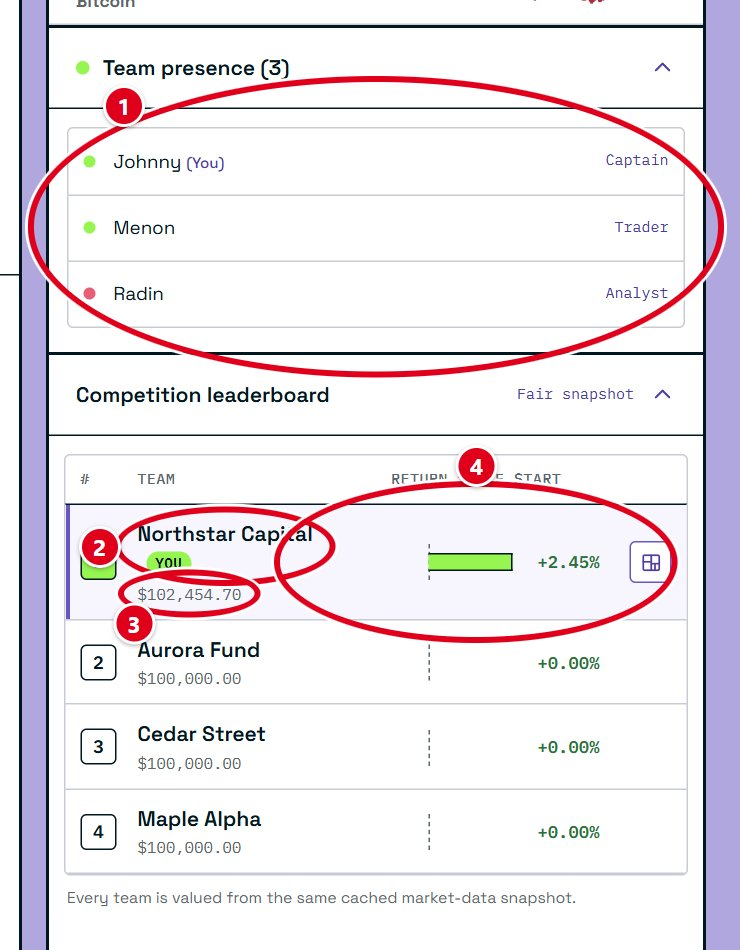
- Team presence. Everyone on your team. A green dot means they're online now.
- Your team. Highlighted on the leaderboard so you can find it.
- Value. Each team's total portfolio value. The highest value when the competition ends wins.
- Return. How much each team has gained or lost since the start, as a percentage.
Every team is valued at the same prices at the same moment, so the ranking is fair.

Good habits for beginners
- Spread your money out. Owning several different companies, or an ETF, means one bad day doesn't sink your whole portfolio.
- Know why you're buying. Look at the chart and the company's sector first. A price that jumped a lot in one day can fall just as fast.
- Use a stop loss. It sells for you if a price falls too far, even when you're not watching.
- Don't chase every move. Prices go up and down all day. Checking once or twice a day is plenty.
- Ask questions. The weekly info sessions are a good place to ask, or email jsun.luban@gmail.com.
The Market Lab uses simulated money for education. Nothing in this guide is investment advice. See the contest rules for the full terms.